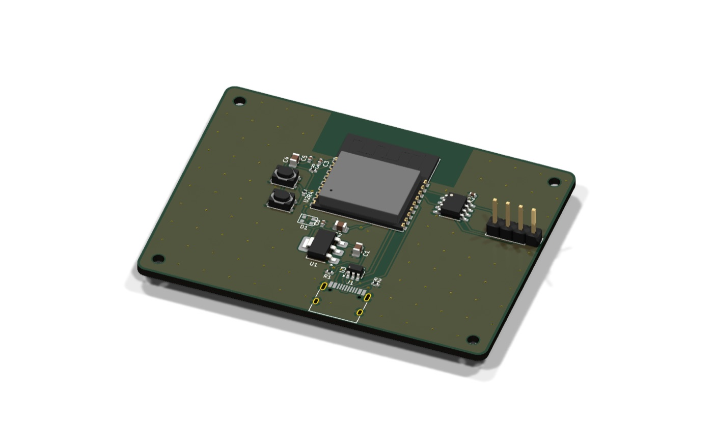

New V2.5 · 2, 4 and 6 layers, chosen for you
Describe a circuit board.
Order it.
Say what the board should do. Claude picks real parts, draws the schematic, places and routes the board in KiCad, checks it, and hands you the files a fab house needs.

From a description to ready to order
Latest test run, total time per board. All four passed DRC.17s
USB-C LED blinker
30 × 22 mm · 10 parts
21s
ESP32-C3 sensor
56 × 41 mm · 20 parts
21s
Same board, 4 layers
Ground and power planes
5:46
RP2040 climate logger
57 × 41 mm · 44 parts
Install
Needs Claude Code, KiCad 9 and Java 21+. macOS or Windows.
claude plugin marketplace add virajrungta/viaductclaude plugin install viaduct@viaductCommands
/viaduct:designan idea to a board/viaduct:reviewcheck any KiCad project/viaduct:inquiryask, or get feedback/viaduct:fabGerbers, BOM, ordering
Next up
- nextFine-pitch chips on 4 layers
- nextMore building blocks
- laterGuided ordering, Linux